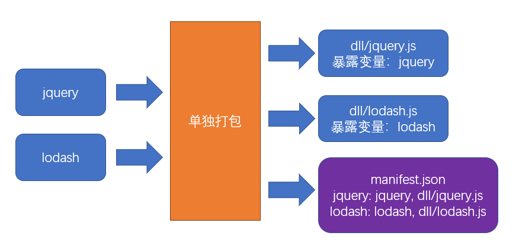

一、基本原理
手动分包的总体思路是：
- 先单独的打包公共模块

- 公共模块会被打包成为动态链接库(dll Dynamic Link Library)，并生成资源清单
- 根据入口模块进行正常打包
- 打包时，如果发现模块中使用了资源清单中描述的模块，则不会形成下面的代码结构
//源码，入口文件index.js |
- 由于资源清单中包含
jquery和lodash两个模块，因此打包结果的大致格式是：
(function(modules){ |
二、打包公共模块
打包公共模块是一个独立的打包过程
- 单独打包公共模块，暴露变量名
// webpack.dll.config.js |
- 利用
DllPlugin生成资源清单
// webpack.dll.config.js |
- 运行后，即可完成公共模块打包
三、使用公共模块
- 在页面中手动引入公共模块
<script src="./dll/jquery.js"></script> |
- 重新设置
clean-webpack-plugin
如果使用了插件
clean-webpack-plugin，为了避免它把公共模块清除，需要做出以下配置目录和文件的匹配规则使用的是globbing patterns
new CleanWebpackPlugin({ |
- 使用
DllReferencePlugin控制打包结果
module.exports = { |
四、总结
4.1 手动打包的过程
- 开启
output.library暴露公共模块 - 用
DllPlugin创建资源清单 - 用
DllReferencePlugin使用资源清单
4.1 手动打包的注意事项
- 资源清单不参与运行，可以不放到打包目录中
- 记得手动引入公共JS，以及避免被删除
- 不要对小型的公共JS库使用
4.1 优点
- 极大提升自身模块的打包速度
- 极大的缩小了自身文件体积
- 有利于浏览器缓存第三方库的公共代码
4.1 缺点
- 使用非常繁琐
- 如果第三方库中包含重复代码，则效果不太理想